Mocap Suit
모션 캡처 슈트
WeGo 종합 사용 설명서를 바탕으로 제조사 문서의 세부 내용을 더했습니다. 드라이버와 VDMocap Studio 설치, 착용과 캘리브레이션, 모션 캡처, 로봇 원격조작 연결과 문제 해결까지 다룹니다.
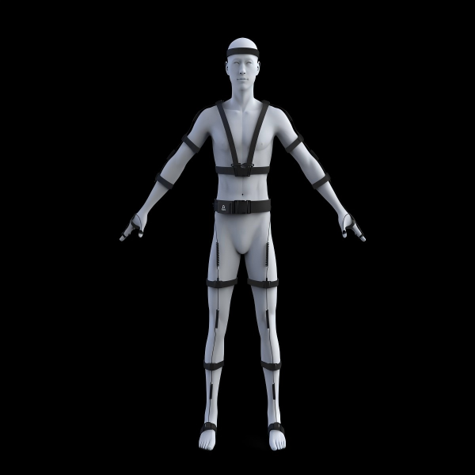
이 설명서에 대하여
| 로봇 | Mocap Suit 관성식 모션 캡처 슈트 (센서 노드 27개, 손가락 센서가 달린 장갑 포함) |
| 근거 문서 | WeGo 종합 사용 설명서 (2026-08) · 제조사 사용 설명서 (2022-09, 34쪽) · 착용 안내서 (2023-02) · 캘리브레이션 안내서 (2023-02) · VDMocap Studio 사용 설명서 English version-1 (2024-08 판, 72쪽) |
| SDK 대조 | VDMocap SDK DataRead (Python 래퍼와 Linux 라이브러리, 제조사 제공) |
| 실측 자료 | WeGo Humanoid Studio 개발 · 운용 기록과 기술 지원 기록 (2026) |
| 소프트웨어 | VDMocap Studio 2.1.7.3 (설치 파일) → 2.1.8.0 (2026-08 기준 최신) · XR21 USB 드라이버 2.7.0.0 · Windows 10 / 11 |
| 함께 보는 책 | WeGo Humanoid Studio 사용 가이드 |
| 판 | 한국어판 · 2026.11.18 |
| 문의 | go.support@wego-robotics.com |
이 책의 뼈대는 WeGo가 2026년 8월에 만든 「종합 사용 설명서」(1 ~ 8장과 부록)이며, 장 순서는 WeGo 설명서 형식에 맞췄습니다(안전 수칙을 2장으로 둠). 그 설명서가 줄여 옮긴 제조사 문서의 세부 내용(사양, 착용 · 캘리브레이션 주의, VDMocap Studio 매개변수, FAQ)은 제조사 원문에서 옮겨 보탰습니다. 8장은 WeGo가 로봇 원격조작에 슈트를 쓰며 확인한 내용입니다. 제조사 문서끼리, 또는 문서와 WeGo 실측이 다른 곳은 그 자리에 참고 상자로 적었습니다. 제조사 자료와 소프트웨어에 관한 문의는 WeGo 기술 지원(go.support@wego-robotics.com)으로 해 주십시오.
© WeGo Robotics. 제조사 문서에서 옮긴 글과 그림의 저작권은 제조사에 있습니다. 그림은 제조사 문서, VDMocap Studio 화면, WeGo가 찍은 Windows 화면입니다. 표지 사진은 제조사가 공개한 제품 사진을 그대로 실은 것입니다.
목차
- 01제품 소개
- 02중요 안전 수칙
- 03드라이버 설치
- 04VDMocap Studio 설치와 설정
- 05착용
- 06캘리브레이션
- 07VDMocap Studio 사용법
- 08로봇 원격조작에 연결
- 09문제 해결
- 부록빠른 참조
제품 소개
Mocap Suit는 27개의 관성 센서(IMU)로 손가락까지 전신 움직임을 실시간으로 캡처하는 무선 · 유선 겸용 모션 캡처 슈트입니다. WeGo는 이 슈트를 사람의 움직임을 휴머노이드 로봇에 옮기는 원격조작 장치로 씁니다.
처음 쓰는 순서
장비를 처음 개봉한 뒤 실제 모션 캡처를 하기까지 아래 순서대로 하십시오. 특히 드라이버 설치와 캘리브레이션은 장비가 정상적으로 동작하려면 반드시 먼저 해야 하는 단계입니다.
- 구성품 확인상자에 구성품이 모두 들어 있는지 확인합니다 (이 장).
- 드라이버 설치무선 수신기용 USB 드라이버를 설치합니다 (3장).
- 소프트웨어VDMocap Studio를 설치하고 언어를 영어로 바꾼 뒤 최신 버전으로 업데이트합니다 (4장).
- 착용과 캘리브레이션슈트를 입고 컨트롤러를 연결한 뒤 캘리브레이션합니다 (5 · 6장).
- 사용모션을 캡처 · 기록하거나 로봇 원격조작 PC로 보냅니다 (7 · 8장).
구성품 문서
설치를 시작하기 전에 제품 상자에 구성품이 모두 들어 있는지 확인하십시오.
- 고정밀 센서(High-accuracy sensor) 28개
- 전신 모션 캡처 슈트(Full-featured motion capture suit) 1벌
- 컨트롤러(Controller) 1개
- 무선 수신기(Wireless receiver) 1개
- 3 m USB 케이블 1개
- 5 V 충전기 1개
- 실리콘 링(Silicone ring) 30개
사양표와 VDMocap Studio 사용 설명서는 센서 노드를 27개로, 구성품 목록은 고정밀 센서를 28개로 적고 있습니다. 제조사 문서는 이 차이를 설명하지 않습니다.
슈트 구성 부위 문서
슈트 본체는 7개 부위로 나뉩니다. 각 부위의 착용 방법과 좌우 구분 요령은 5장에서 설명합니다.
- 몸통(Body part): 머리 · 등 · 허리 노드와 어깨 스트랩, 허리 벨트
- 왼팔(Left arm) · 오른팔(Right arm): 위팔 · 아래팔 노드
- 왼손(Left hand) · 오른손(Right hand): 손등 노드와 손가락 센서
- 왼발(Left foot) · 오른발(Right foot): 허벅지 · 종아리 · 발 노드 (슈트 라벨에는 左腿 · 右腿로 표기)
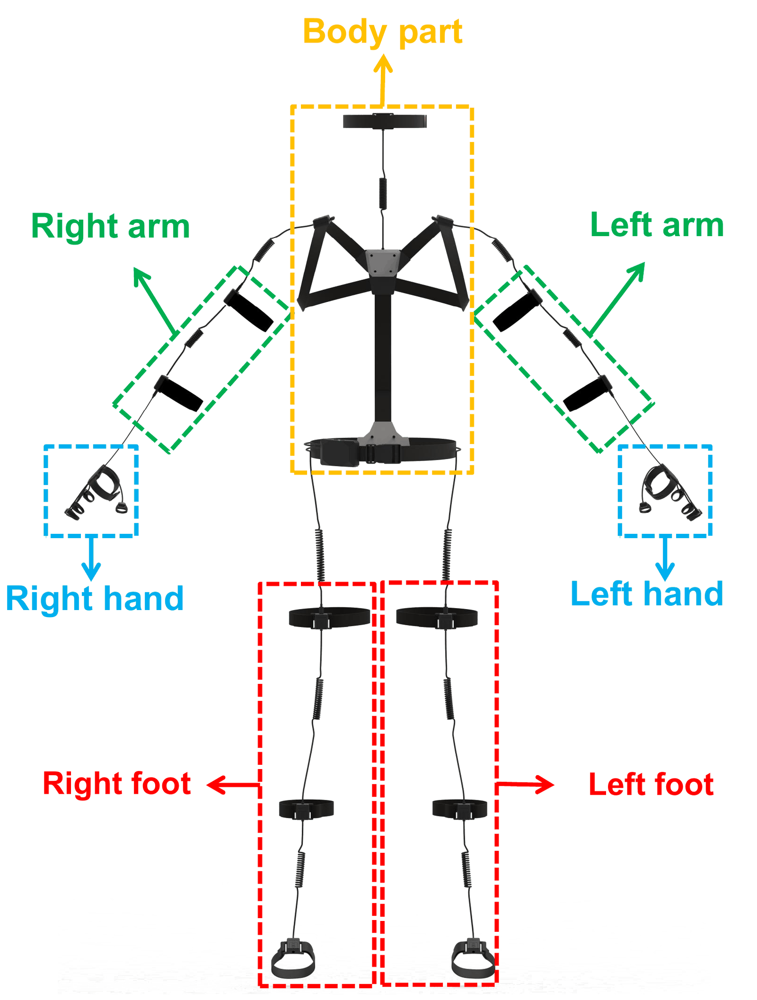
특징 문서
- 출하 전 정밀 보정: 장치가 최적의 성능을 내도록 출하 전에 보정합니다.
- 자체 개발 핵심 알고리즘: 하드웨어 성능을 더 잘 끌어냅니다.
- 적응형 온도 보상 알고리즘: 온도에 따른 값의 흐름을 효과적으로 억제합니다.
- 자기 간섭에 강한 알고리즘: 갑작스러운 자기장 변화의 영향을 60초 동안 억제합니다.
사양 문서
| 항목 | 값 |
|---|---|
| 방식 | 관성식 모션 캡처. 정확성 · 적응성 · 유연한 사용 |
| 슈트 무게 | 0.5 kg |
| 착용 시간 | 5분 미만 |
| 센서 노드 | 27개 |
| 가속도 범위 | ±16 g |
| 자이로 범위 | ±2000 (원문에 단위 없음) |
| 지자기 범위 | 4.9 Gs |
| 자세 측정 범위 | 360° |
| 자세 정확도 | ROLL < 0.5° · PITCH < 0.5° · YAW < 1.5° |
| 데이터 전송 | 2.4 GHz 무선 또는 USB 2.0 유선 |
| 전송 거리 | 무선 30 m (트인 환경) · 유선 3 m |
| 데이터 프레임 속도 | 60 · 72 · 80 · 96 Hz |
| 데이터 형식 | RAW · QUA · EULER · BVH · FBX |
| 전원 | 내장 대용량 리튬 배터리, 연속 2.5시간 |
| 충전 | Micro USB 단자, 외부 5 V 충전기, 완충 2시간 미만 |
| 내부 데이터 갱신 | 500 Hz |
| 변위 · 고속 동작 | 변위 기능 지원. 점프 · 공중제비 같은 어려운 동작 지원 |
| 연동 플랫폼 | Unity3D · UE4 · 3D MAX · MAYA · MotionBuilder (각 프로그램의 라이선스는 따로 필요) |
| 캘리브레이션 | 단일 자세 캘리브레이션 (6장의 문서 차이 참고) |
| 데이터 편집 · 재생 | 모션 캡처 소프트웨어에 편집 · 재생 기능 포함 |
사용 설명서는 연속 사용 2.5시간, 제조사 웹사이트의 제품 페이지는 충전 2시간 · 연속 사용 3시간으로 적고 있습니다. 이 책은 사용 설명서의 값을 실었습니다.
WeGo가 쓰는 방식
슈트는 무선 수신기(또는 USB 케이블)로 Windows PC의 VDMocap Studio에 연결됩니다. VDMocap Studio가 계산한 자세를 데이터 브로드캐스트(UDP)로 Ubuntu PC의 WeGo Humanoid Studio에 보내면, Humanoid Studio가 이를 로봇의 관절로 옮겨 로봇을 움직입니다. 연결 방법은 8장, 원격조작 소프트웨어는 WeGo Humanoid Studio 사용 가이드를 보십시오.
중요 안전 수칙
슈트를 쓰거나 보관하기 전에 이 장을 읽으십시오. 제조사 문서의 주의 사항과, 슈트로 로봇을 움직일 때 지켜야 할 WeGo 원격조작 소프트웨어의 안전 지침을 모았습니다.
자성 물체 문서
장치는 꺼져 있어도 자성 물체의 영향을 받습니다. 보관하거나 사용할 때 자성 물체에서 적어도 50 cm ~ 1 m 떨어뜨리십시오. 흔한 자성 물체: 키보드 · TV · 마우스 · 컴퓨터 · 휴대 전화 · 스피커 · 선풍기 · 세탁기 · 금속 책상과 의자 · 자석.
자석, 철 제품, 땅속의 큰 철근, 금속 가구, 스피커, 대형 철제 구조물 근처에서는 캘리브레이션이 실패하거나 동작에 오차가 생길 수 있습니다(6 · 10장). 센서가 자화되어도 동작이 맞지 않습니다. 여러 번 캘리브레이션해도 그러면 딥 마그네틱 캘리브레이션을 고려하십시오(7장 「하드웨어 · 시스템 설정」).
착용과 연결 문서
- 케이블은 각 센서의 USB 단자 끝까지 꽂고, 사용 중 빠지지 않도록 결합 상태를 확인하십시오.
- 손가락 링의 홈은 착용자 쪽을 향하게 끼우십시오. 반대로 끼우면 손을 움직일 때 손가락 노드가 빠집니다.
충전 문서
- 슈트는 내장 리튬 배터리로 동작하며, Micro USB 단자에 외부 5 V 충전기를 연결해 충전합니다. 완충까지 2시간이 걸리지 않습니다.
- 배터리가 부족하면 수신기와 컨트롤러의 자동 페어링이 실패합니다. 충전한 뒤 다시 켜십시오.
로봇 원격조작
로봇은 슈트를 입은 작업자의 움직임을 그대로 따라갑니다. Humanoid Studio 사용 가이드의 안전 지침(17장)과 비상 정지(12장)를 먼저 읽고 따르십시오.
- 작업 중에는 작업 공간에 사람과 장애물이 없도록 하십시오.
- 진입 전에 항상 미리보기 단계로 추종을 확인하십시오.
- 비상 정지를 항상 손이 닿는 곳에 두십시오.
- 무엇이든 이상해 보이면 먼저 비상 정지를 누르고 나서 상황을 확인하십시오.
드라이버 설치
슈트를 PC에 연결하기 전에 무선 수신기용 USB 드라이버(XR21)를 반드시 먼저 설치하십시오. 아래 절차는 드라이버 폴더에 들어 있는 공식 설명서 「动捕驱动使用说明书.pdf」를 WeGo가 Windows PC에서 따라 하며 정리한 것입니다. 실측
설치 실측
드라이버 폴더 xr21x_win10_v2.7.0.0은 압축이 풀린 상태로 제공되므로, 따로 압축을 풀지 않고 1단계부터 시작하십시오.
- 운영 체제 종류를 확인하십시오.Windows 검색창에 「내 PC 정보」를 입력해 실행하거나 [설정] > [시스템] > [정보]를 여십시오. 「시스템 종류」가 「64비트 운영 체제, x64 기반 프로세서」이면 x64, 「32비트 운영 체제, x86 기반 프로세서」이면 x86입니다.
- 폴더를 고르십시오.
xr21x_win10_v2.7.0.0\XR21_Win10_V2.7.0.0안에서 앞서 확인한 종류의 하위 폴더(x64 또는 x86)로 들어가십시오. - 설치하십시오.그 폴더의
xrusbser.inf파일을 마우스 오른쪽 단추로 누른 뒤 메뉴에서 「설치(I)」를 누르십시오. - 완료 창을 닫으십시오.설치가 끝나면 완료 안내 창(중국어판 표기 「操作成功完成」, 작업이 성공적으로 완료되었습니다)이 나타납니다. 「확인」을 누르십시오.
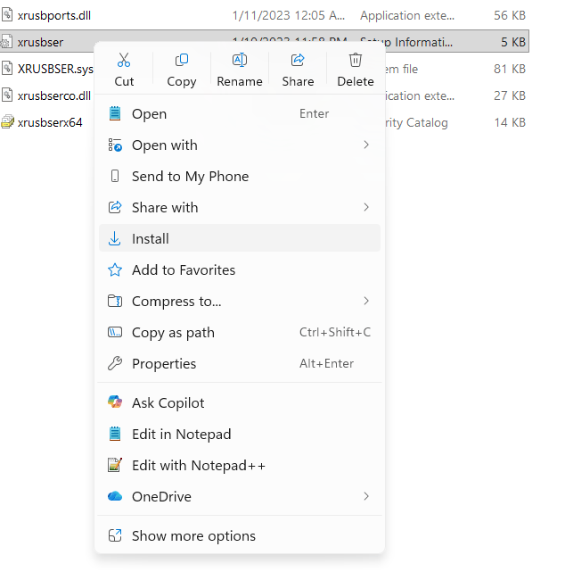
xrusbser.inf를 오른쪽 단추로 누르고 「설치」 선택 (WeGo 화면)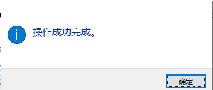
설치 확인 실측
- 수신기를 꽂으십시오.무선 수신기(동글)를 PC의 USB 포트에 꽂으십시오.
- 장치 관리자를 여십시오.Windows 검색창에 「장치 관리자」를 입력해 실행하십시오.
- 포트를 확인하십시오.「포트(COM 및 LPT)」를 펼쳐 「XR21V1410 USB UART (COMxx)」가 보이는지 확인하십시오. 보이면 드라이버가 정상적으로 설치된 것입니다. 보이지 않거나 노란색 경고 아이콘이 있으면 드라이버를 다시 설치하거나 PC를 다시 시작한 뒤 다시 확인하십시오.
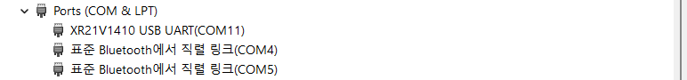
「XR21V1410 USB UART」 항목은 수신기가 PC에 꽂혀 있을 때만 보이고, 뽑으면 목록에서 사라집니다. 설치 여부는 반드시 수신기를 꽂은 상태에서 확인하십시오. 설치 중 문제가 생기면 드라이버 폴더의 원본 PDF 설명서도 함께 보십시오.
제조사 사용 설명서(2022)는 수신기를 USB 포트에 꽂으면 대개 드라이버가 자동으로 설치되고, 그렇지 않으면 설치 창이 뜨거나 제조사 드라이버 설치 패키지를 쓰라고 합니다. 실패 예로는 노란 표시가 붙은 「CP2104 USB to UART Bridge Controller」를 보여 주며, 이때 포트를 오른쪽 단추로 눌러 장치를 제거한 뒤 다시 설치하라고 합니다. WeGo가 받은 2026년 자료(드라이버 2.7.0.0)의 수신기는 「XR21V1410 USB UART」로 나타납니다.
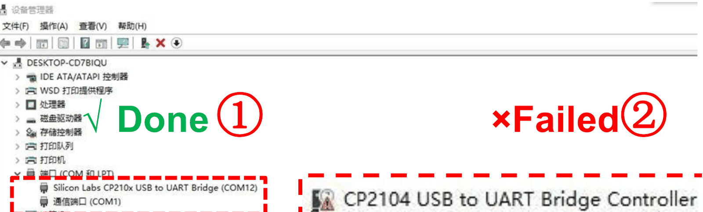
Ubuntu PC의 가상 머신에 설치한 Windows에서는 슈트가 인식되지 않았고, 실제 Windows 노트북에서는 인식되었습니다(WeGo 현장 확인). 드라이버와 VDMocap Studio는 실제 Windows PC에 설치하십시오.
VDMocap Studio 설치와 설정
드라이버 설치가 끝나면 제조사의 모션 캡처 소프트웨어 VDMocap Studio를 설치하고, 언어를 영어로 바꾼 뒤 최신 버전으로 업데이트하십시오. VDMocap Studio는 슈트와 함께 제공되는 제조사 소프트웨어입니다.
실행 환경 문서
| 항목 | 요구 사항 |
|---|---|
| 디스플레이 | 1대 |
| CPU | Intel 5 (원문 표기) |
| 운영 체제 | Windows 10 |
| 설치 크기 | 600 MB |
| RAM | 8 GB 이상 |
| 그래픽 카드 | 외장 그래픽 카드 |
| USB 허브 | 3포트 이상 (장치의 수와 종류에 따라) |
WeGo는 Windows 11 PC에서도 드라이버 설치와 VDMocap Studio 실행을 확인했습니다. 실측
설치 실측
설치 파일은 소프트웨어 자료 폴더의 「A-VDMocapStudio_2.1.7.3」 압축 파일에 들어 있습니다.
- 압축을 푸십시오.「A-VDMocapStudio_2.1.7.3」 파일의 압축을 푸십시오.
- 실행하십시오.압축을 푼 폴더에서 VDMocapStudio 실행 파일을 두 번 누르십시오.
- SmartScreen 경고를 넘기십시오.Windows Defender SmartScreen이 「알 수 없는 게시자」 경고와 함께 실행을 막을 수 있습니다. 이때 안내 창에서 「추가 정보(More info)」를 누른 뒤 「실행(Run anyway)」을 누르십시오.
- 메인 화면을 확인하십시오.실행을 허용하면 VDMocap Studio가 실행되고 메인 화면이 나타납니다.
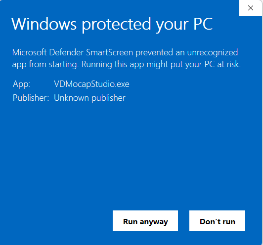
언어를 영어로 바꾸기 실측
설치 직후 VDMocap Studio는 중국어(간체) 화면으로 실행됩니다. 아래 절차로 언어를 영어로 바꾸십시오. 시연 영상은 자료 폴더의 「Change Language Video.mp4」를 보십시오.
- 설정 메뉴를 여십시오.위쪽 메뉴에서 「设置」(설정, Settings)를 누르십시오. 「系统设置」(시스템 설정, System Settings) 창이 열립니다.
- English를 고르십시오.창 안의 「语言」(언어, Language) 목록을 눌러 「English」를 고르십시오.
- 확인하십시오.언어가 바로 영어로 바뀌며, 위쪽 메뉴를 포함한 모든 메뉴와 단추가 영어로 표시됩니다.
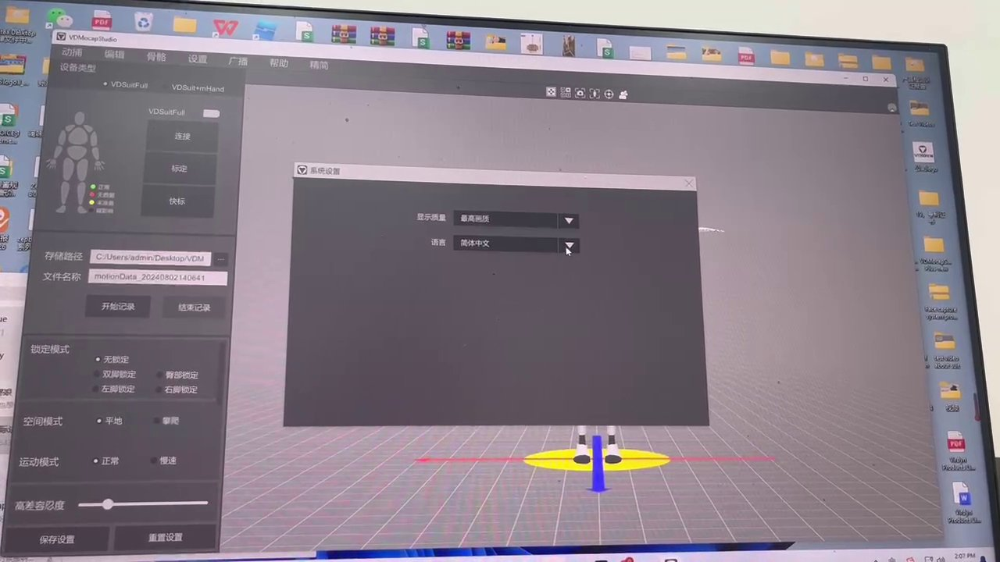
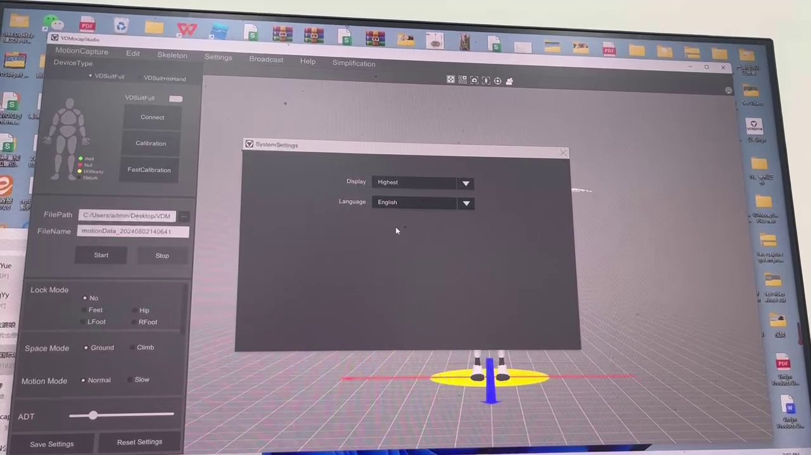
| 중국어 | 영어 | 뜻 |
|---|---|---|
| 动捕 | MotionCapture | 모션 캡처 |
| 编辑 | Edit | 편집 |
| 骨骼 | Skeleton | 스켈레톤 |
| 设置 | Settings | 설정 |
| 广播 | Broadcast | 브로드캐스트 |
| 帮助 | Help | 도움말 |
| 精简 | Simplification | 간소화 |
최신 버전으로 업데이트 실측
최신 기능과 안정성 개선을 적용하려면 최신 버전으로 업데이트하십시오. 2026년 8월 기준 최신 버전은 v2.1.8.0이고, 앞에서 설치한 파일의 버전은 v2.1.7.3이므로 업데이트 창의 「Cur Version」(현재 버전)에는 v2.1.7.3이 표시됩니다. 아래 그림은 다른 버전이 설치된 PC의 화면이라 번호가 다를 수 있으나 조작은 같습니다.
- Settings를 누르십시오.위쪽 메뉴에서 「Settings」를 누르십시오.
- UpdateDetection을 누르십시오.하위 메뉴에서 「UpdateDetection」을 누르십시오.
- Update Now를 누르십시오.새 창에서 「Update Now」를 누르십시오. 최신 버전이 자동으로 내려받아져 설치됩니다. 끝날 때까지 창을 닫지 말고 기다리십시오.
- 다시 실행하십시오.업데이트가 끝나면 프로그램을 완전히 종료한 뒤 다시 실행하십시오.
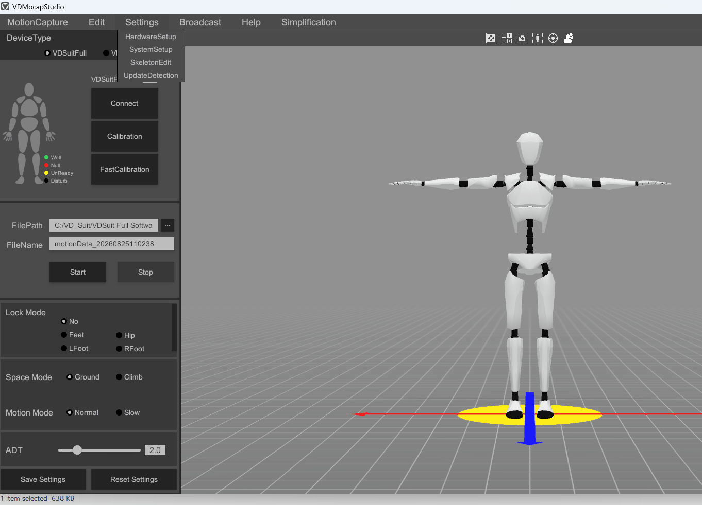
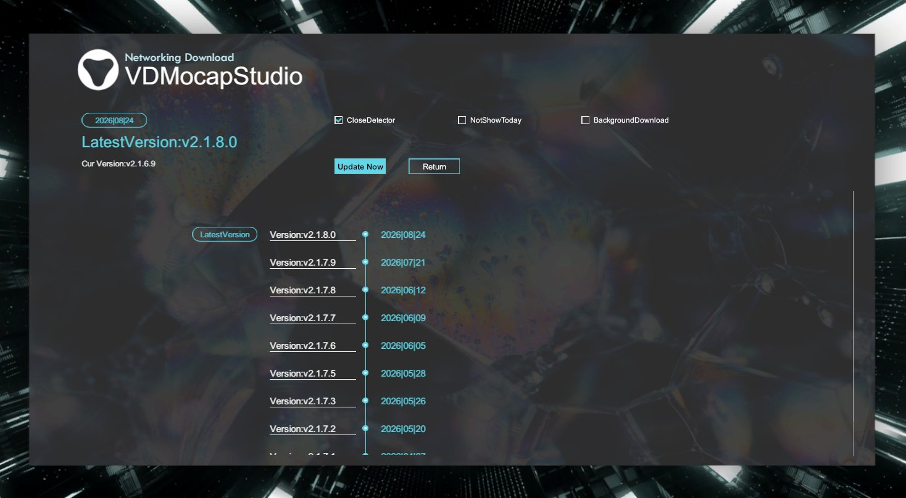
착용
정확한 캘리브레이션과 모션 캡처 품질을 얻으려면 슈트를 올바른 위치와 방향으로 입어야 합니다. 노드 위치가 조금만 어긋나도 캘리브레이션이 실패하거나 동작이 부정확하게 표시될 수 있습니다. 문서
제조사의 공식 튜토리얼 영상은 착용 · 연결 · 캘리브레이션 전 과정을 한 번에 보여 줍니다. 처음 쓴다면 영상을 먼저 본 뒤 이 장의 절차를 따르십시오. 영상 링크는 WeGo 기술 지원(go.support@wego-robotics.com)에 요청하십시오.
부위와 좌우 구분 문서
- 슈트는 왼팔, 오른팔, 왼다리(왼발), 오른다리(오른발), 몸통, 왼손, 오른손의 7개 부위로 되어 있습니다.
- 각 부위의 라벨(左手 = 왼손, 右手 = 오른손, 左腿 = 왼다리, 右腿 = 오른다리)을 보고 좌우를 구분하십시오. 라벨에는 그 부위가 빨간색으로 표시되어 있습니다.
- 각 노드 뒷면의 사람 그림을 똑바로 세워 들었을 때, 그림이 똑바로 선 첫 번째 노드가 위팔(다리는 허벅지) 노드입니다.
- 선 자세를 기준으로 각 노드가 바깥쪽을 향하도록 착용하십시오.
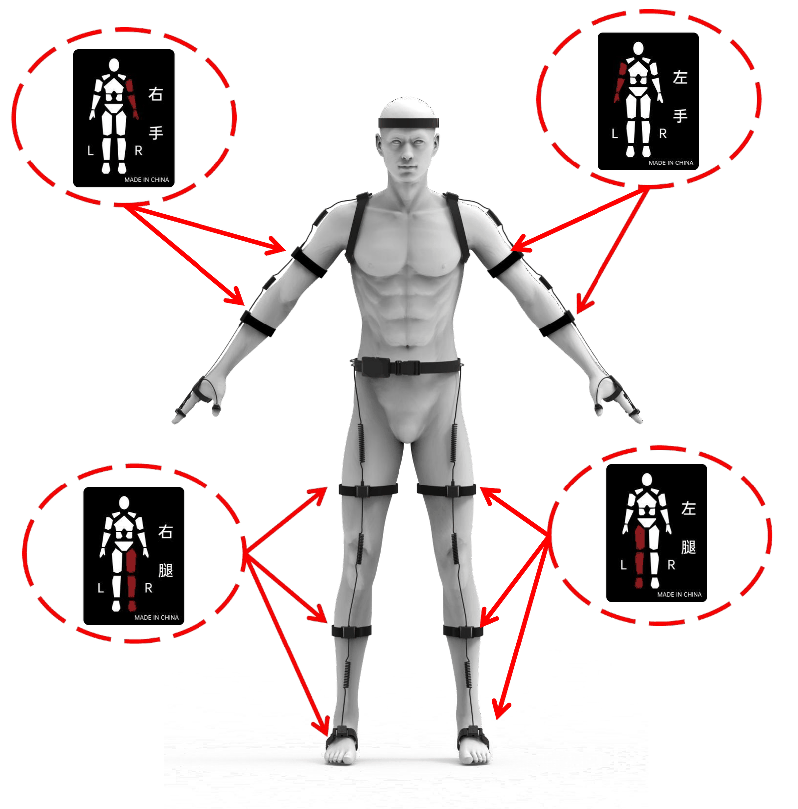
위팔과 아래팔 구분 문서
- 팔 고정 밴드는 위팔용이 더 길고, 아래팔용이 더 짧습니다. 밴드 길이로 두 부위를 구분하십시오.
- 선 자세를 고정한 상태에서 각 노드가 바깥쪽을 향하도록 착용하십시오.
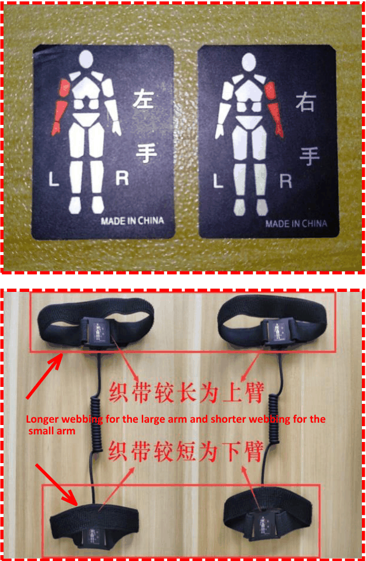
고정 밴드와 케이블 연결 문서
- 위팔, 아래팔, 허벅지의 노드는 각각 근육이 적은 부위에 고정하십시오.
- 케이블을 각 센서의 USB 단자 끝까지 밀어 넣고, 커넥터가 센서 안쪽까지 완전히 들어갔는지 확인하십시오. 사용 중 케이블이 빠지지 않도록 결합 상태를 반드시 점검하십시오.
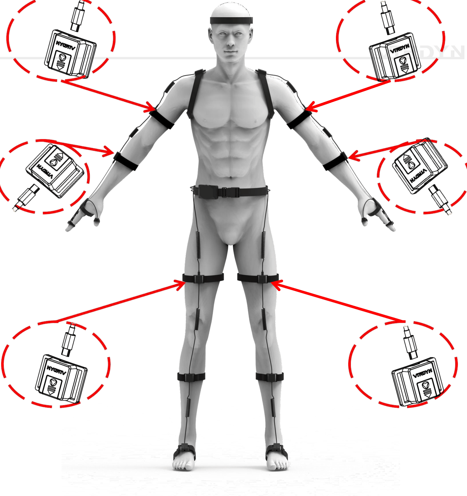
손 문서
좌우 손 구분과 손등 센서
- 손등 센서, 손목 스트랩, 엄지 센서의 위치로 좌우 손을 구분하십시오.
- 손등 노드는 손바닥 정반대편, 즉 손등 가운데에 오도록 착용하십시오.
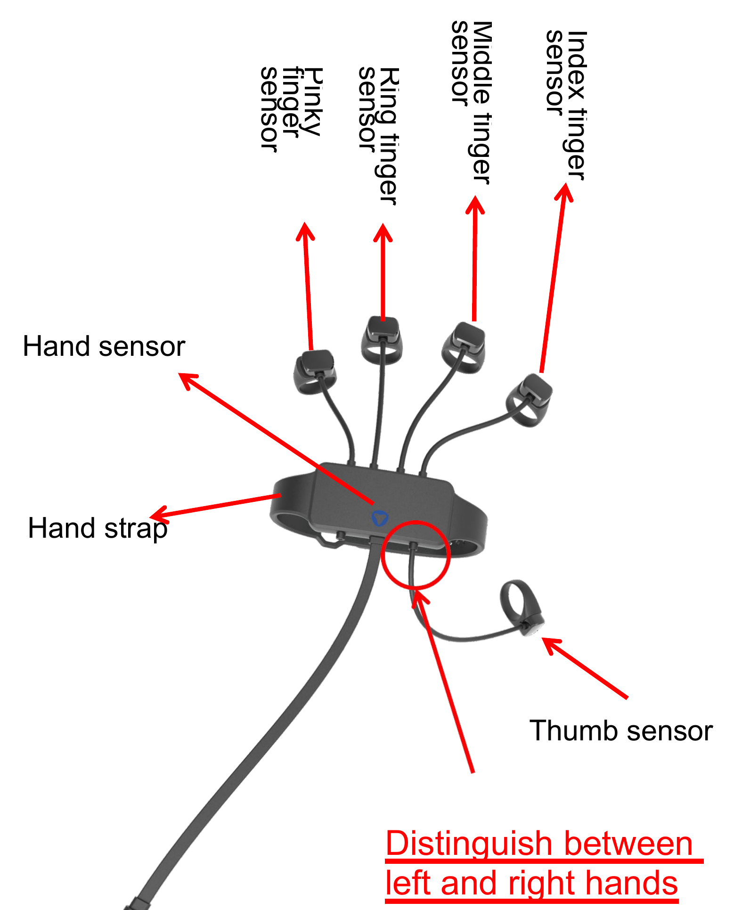
손목 밴드
- 손등 센서를 손등에 올린 뒤, 밴드의 고정 핀을 홈에 눌러 끼우십시오.
- 버클을 채우고 손 크기에 맞게 길이를 조절하십시오. 너무 헐렁하면 센서가 흔들려 데이터 오차가 생기고, 너무 조이면 착용감이 나쁘므로 알맞게 밀착되도록 조절하십시오.
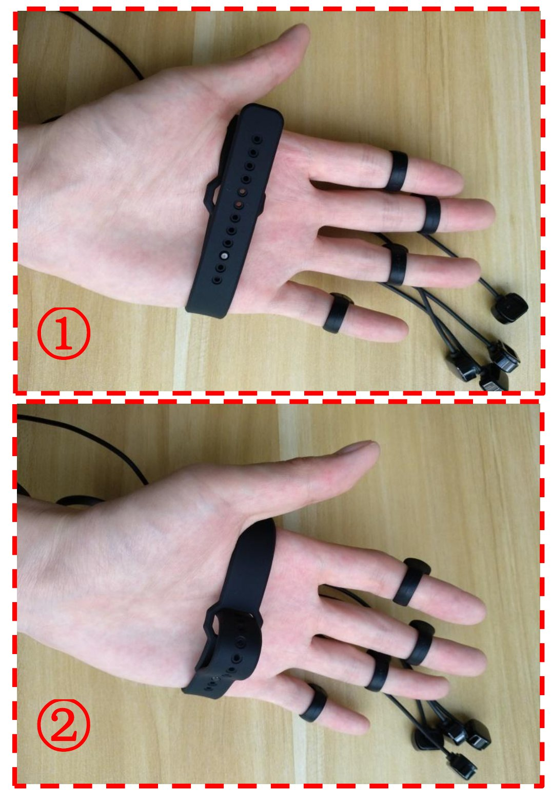
손가락 링
- 제공된 30개의 실리콘 링 가운데 손가락 굵기에 맞는 것을 고르십시오. 너무 조이거나 헐렁하지 않아야 합니다.
- 링의 홈(노치)이 착용자 쪽을 향하고, 홈이 위쪽을 보도록 착용하십시오.
- 엄지 링은 첫째 마디에, 나머지 네 손가락의 링은 둘째 마디에 착용하십시오.
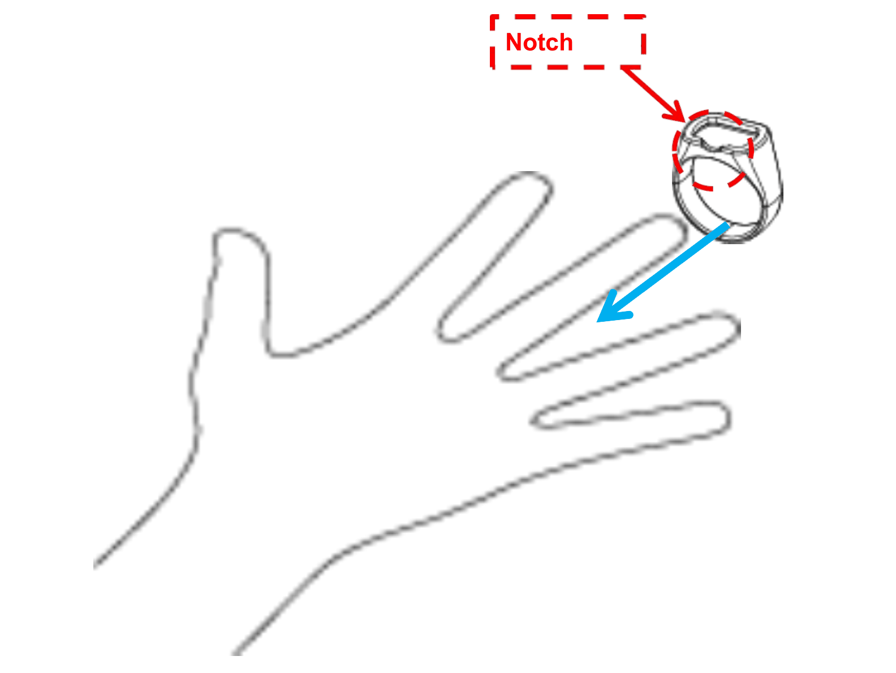
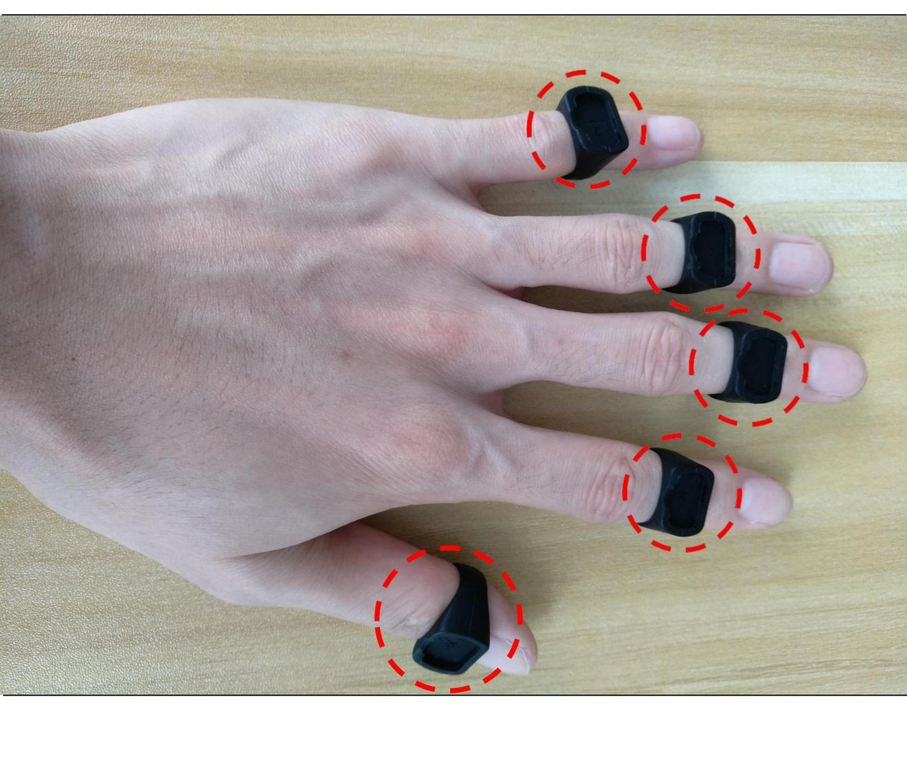
손가락 센서
- 각 손가락의 센서를 그 손가락 링의 홈에 가볍게 눌러 끼워 고정하십시오.
- 센서가 각 손가락의 정확한 위치에 고정되었는지 반드시 확인하십시오. 위치가 어긋나면 캘리브레이션이 실패하거나 사용 중 오류가 납니다.
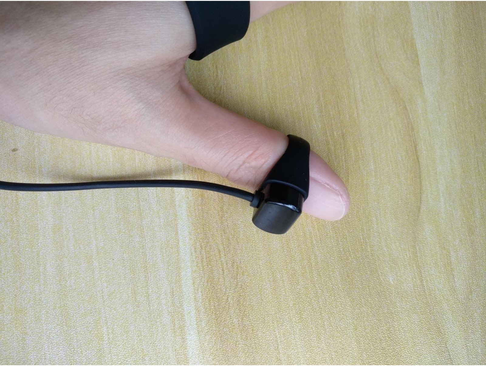
장갑 착용 확인
- 링을 헐렁하게 끼우지 마십시오. 손가락 마디에 딱 맞아야 하며, 그렇지 않으면 캘리브레이션과 사용에 영향을 줍니다.
- 손목 스트랩은 손바닥에 밀착되어야 합니다. 그렇지 않으면 캘리브레이션에 영향을 줍니다.
- 링의 홈은 반드시 착용자 쪽을 향해야 합니다. 그렇지 않으면 손을 움직일 때 손가락 노드가 빠집니다.
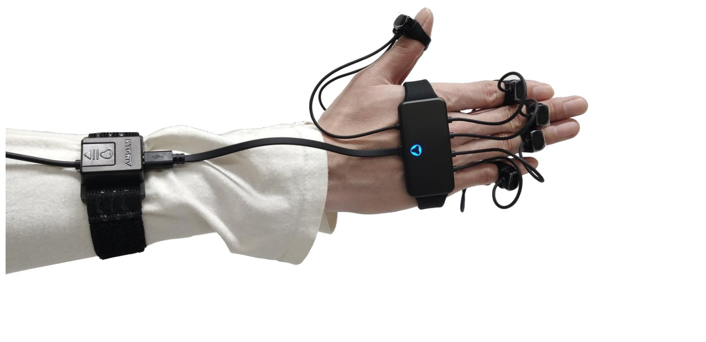
어깨 · 허벅지 · 종아리 · 발 문서
- 어깨 스트랩은 어깨 앞쪽이 아니라 뒤쪽의 평평한 부분에 착용하고, 착용한 뒤 스트랩을 조여 흘러내리지 않게 하십시오.
- 허벅지 노드는 근육이 적은 부위, 되도록 무릎에 가까운 쪽에 착용하십시오. 움직일 때 근육이 부풀어 노드가 밀리는 것을 막기 위해서입니다.
- 종아리 노드도 근육이 적은 부위, 되도록 무릎 바로 아래에 착용하십시오.
- 발 노드는 방향에 주의하십시오. 데이터 케이블이 안쪽을 향하게 하고, 발등 바로 위에서 묶으십시오.
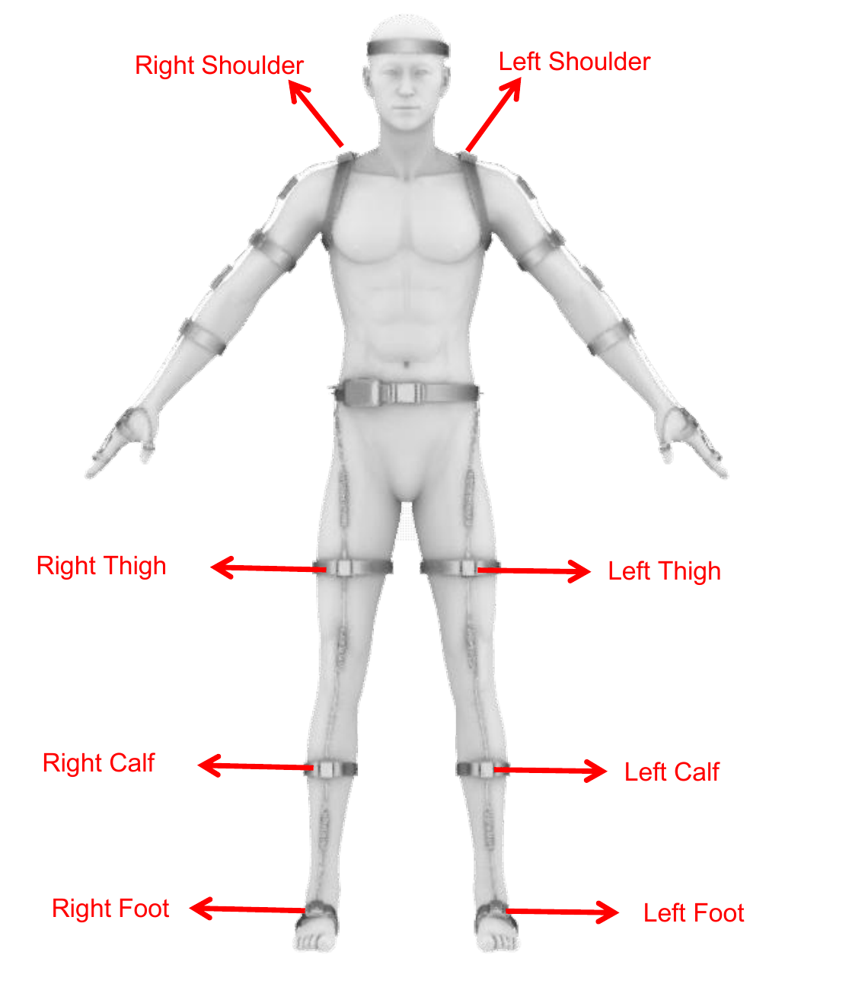
머리 · 등 · 허리와 팔 노드 정렬 문서
- 머리, 등, 허리 세 노드가 몸 가운데의 한 직선 위에 오도록 착용하십시오.
- 머리 노드는 데이터 케이블이 아래를 향하게 하여 뒤통수 가운데에 착용하십시오.
- 몸통 부분은 등의 로고가 바깥쪽을 향하도록 착용하십시오.
- 허리 노드는 배 뒤쪽 허리에, 등 노드처럼 척추 위에 오게 하십시오.
- 위팔 노드는 팔꿈치 가까이, 아래팔 노드는 손목 가까이의 근육이 적은 곳에 착용하십시오. 근육이 움직이면 자세에 영향을 줍니다.
- 위팔, 아래팔, 손등 세 노드는 반드시 한 직선 위에 오게 하십시오.
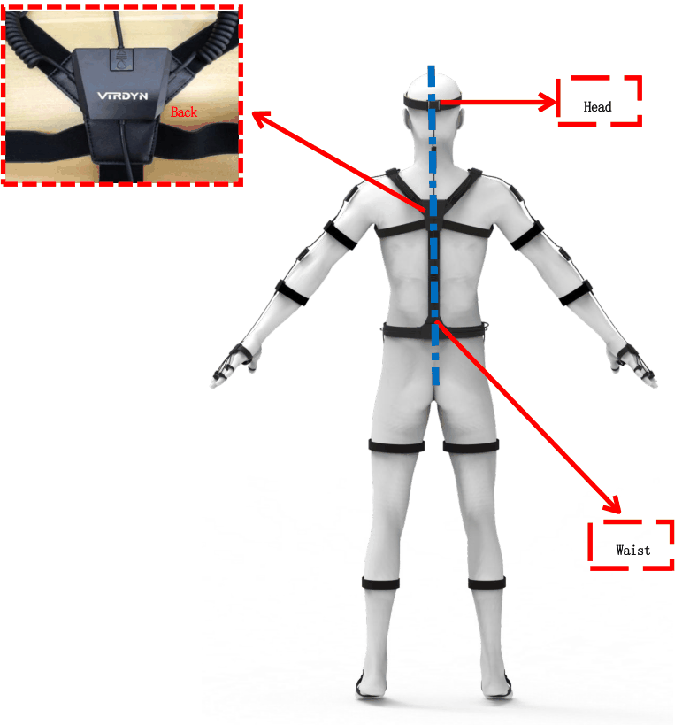
컨트롤러(허브) 착용과 연결 문서
- 허브(컨트롤러)는 배의 오른쪽에 착용하십시오. 배 오른쪽의 짧은 케이블은 허브 연결용, 긴 케이블은 오른쪽 허벅지 연결용입니다.
- 무선 연결: 허브 케이블을 「Signal out」(데이터 단자)에 꽂고, 수신기를 컴퓨터의 USB 포트에 꽂으십시오. 수신기를 먼저 꽂은 뒤 컨트롤러를 켜십시오. 수신기에 연결하기 전에 장치를 켜면 페어링이 실패합니다(제조사 FAQ).
- 유선 연결: 허브 케이블을 「Signal out」에 꽂은 뒤, 3 m USB 케이블의 한쪽을 「Charge in」(전원 단자)에, 반대쪽을 컴퓨터의 USB 포트에 꽂으십시오.
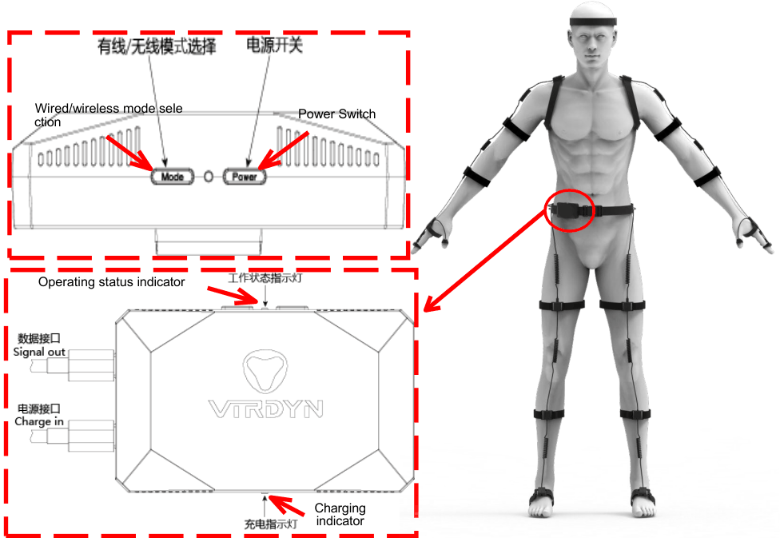
| 단추 | 동작 |
|---|---|
| Power (전원) | 꺼진 상태에서 1초 길게 누르면 켜지고 작동 표시등이 켜집니다(착용 안내서: 파란색). 켜진 상태에서 2초 길게 누르면 꺼지고 표시등이 꺼집니다. |
| Mode (연결 방식) | 무선 상태에서 2초 길게 누르면 유선으로 바뀌고 작동 표시등이 빨간색으로 계속 켜집니다. 유선 상태에서 2초 길게 누르면 무선으로 바뀌고 표시등이 파란색으로 계속 켜집니다. |
WeGo 현장 확인에서, 실험실의 전파 환경에 따라 2.4 GHz 무선 연결에서는 VDMocap Studio의 장치 인식이 불안정했지만 3 m USB 유선 연결로는 인식된 경우가 있었습니다. 무선이 불안정하면 유선으로 바꾸어 확인하십시오. 유선 · 무선을 바꾼 뒤에는 소프트웨어에서 다시 연결해야 합니다(7장).
캘리브레이션
슈트를 입은 뒤에는 반드시 캘리브레이션해야 정확한 모션 데이터를 얻을 수 있습니다. 노드의 위치를 옮겼거나 슈트를 다시 입었다면 매번 다시 캘리브레이션하십시오. 문서
캘리브레이션은 자세의 정확도가 결과를 좌우합니다. 5장의 제조사 튜토리얼 영상에서 실제 자세를 확인한 뒤 시작하십시오. 원본은 자료 폴더의 「How to do correct calibration」 문서입니다.
시작 문서
- 장치 종류를 고르십시오.VDMocap Studio의 Device Type에서 연결하기 전에 「VDSuitFull」을 고르십시오(7장).
- 연결하십시오.「Connect」를 눌러 슈트를 연결하십시오.
- Calibration을 누르십시오.캘리브레이션 창에서 A_pose와 P_pose 두 확인란을 모두 고른 뒤 「OK」를 누르십시오.
- 자세를 취하십시오.화면 안내에 따라 A_pose → P_pose 순서로 자세를 취하고, 각 자세에서 진행률이 100 %가 될 때까지 움직이지 마십시오.
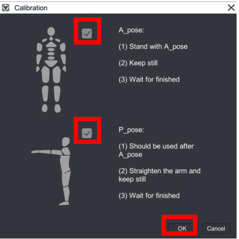
A_Pose 문서
- 양손을 자연스럽게 아래로 내리고, 좌우 팔이 서로 평행하게 하십시오.
- 손바닥이 안쪽(서로 마주 보는 쪽)을 향하게 하여 허벅지에 붙이십시오.
- 엄지와 검지는 45°로 벌리고, 나머지 네 손가락은 곧게 아래로 펴십시오.
- 다리는 곧게 펴고, 발끝이 정면을 향하게 하여 발을 어깨너비로 벌리십시오.
- 몸을 숙이거나 앞뒤로 기울이거나 구부정하게 서지 마십시오.
- 캘리브레이션이 끝날 때까지 움직이지 마십시오. 움직이면 실패합니다.
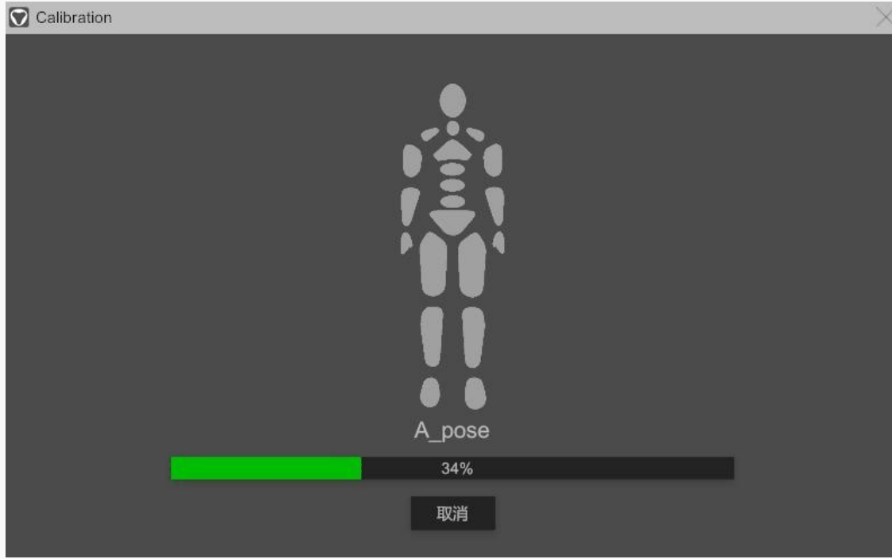
P_Pose 문서
- P_Pose는 반드시 A_Pose 캘리브레이션을 마친 뒤에 하십시오.
- 양손을 가슴 앞으로 자연스럽게 수평이 되게 들어 올리고, 좌우 손이 서로 평행하게 하며 두 손 사이는 어깨너비로 두십시오.
- 손바닥, 아래팔, 위팔이 한 직선이 되게 하십시오.
- 두 손바닥은 아래를 향하게 하고, 엄지와 검지는 45°, 나머지 네 손가락은 가지런히 붙여 곧게 펴십시오.
- 캘리브레이션이 끝날 때까지 움직이지 마십시오.
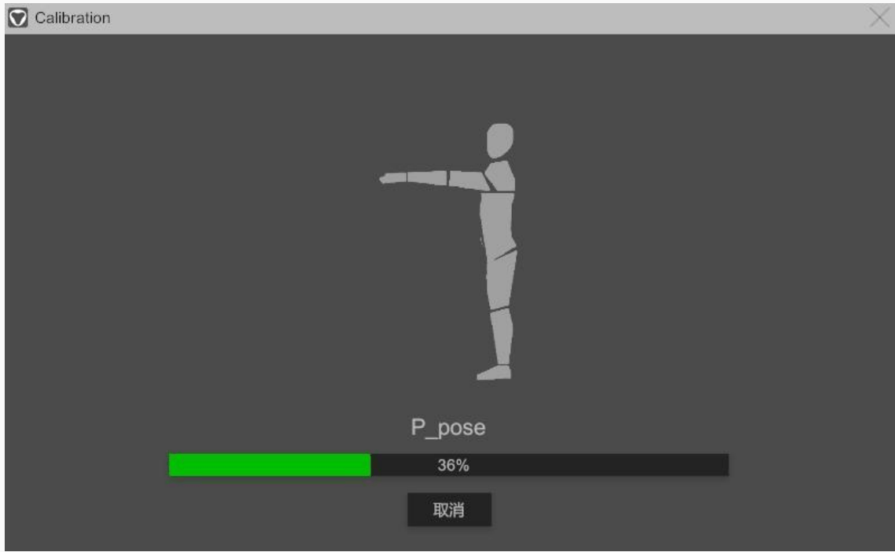
빠른 캘리브레이션 문서
「FastCalibration」(빠른 캘리브레이션)은 안내 없이 바로 시작합니다. 착용자가 먼저 캘리브레이션 자세를 취하고, 조작하는 사람이 단추를 누르십시오.
VDSuitFull의 빠른 캘리브레이션 자세는 A_Pose 차렷 자세입니다.
슈트 사양표는 「단일 자세 캘리브레이션」이라고 적지만, VDMocap Studio 사용 설명서와 캘리브레이션 안내서는 사용 전에 A_Pose와 P_Pose 두 자세를 모두 고르라고 합니다. 한 자세로 하는 것은 빠른 캘리브레이션입니다. 이 책은 두 자세 절차를 따랐습니다.
실패할 때 문서
- 진행률이 33 % 또는 66 %에서 실패하는 경우는 대개 손이 흔들렸거나 곧게 펴지지 않았거나, 팔 부분(좌우 · 위팔과 아래팔)을 잘못 착용한 경우입니다. 5장의 착용 방법을 다시 확인하십시오.
- 자석, 금속 가구, 스피커, 대형 철제 구조물 같은 자성 물체 근처에서는 캘리브레이션이 실패하거나 오차가 생길 수 있습니다. 이런 물체에서 떨어진 곳에서 하십시오.
- 스쿼트할 때 다리가 평행하지 않으면 허벅지 부분을 근육이 적은, 무릎에 가까운 위치로 옮겨 다시 착용하십시오.
- 여러 날 사용한 뒤 팔다리 동작이 어긋나면 A_Pose 캘리브레이션을 다시 하십시오. 문제가 계속되면 Settings → Hardware Setting의 성능 복구(Performance Recovery)로 자성 캘리브레이션을 하십시오.
진행률이 오르지 않을 때 실측
WeGo 기술 지원에서 쓴 순서입니다.
- 슈트의 장갑을 끼십시오.캘리브레이션은 슈트에 들어 있는 장갑을 끼고 하십시오.
- 연결을 확인하십시오.연결 전에 장치 종류를 「VDSuitFull」로 고르고, 무선과 유선 두 방식에서 모두 장치 연결 상태를 확인하십시오.
- 일반 캘리브레이션을 다시 하십시오.연결이 정상이면 「Calibration」을 다시 한 번 실행하십시오.
- Wearable Calibration을 하십시오.그래도 진행률이 오르지 않으면 Settings → Hardware Setting(하드웨어 설정) → Performance Recovery에서 「Wearable Calibration」을 고르고 화면 안내에 따르십시오. 정상적으로 끝나면 일반 캘리브레이션을 다시 하십시오.
- Box Recovery를 하십시오.Wearable Calibration으로도 진행률이 오르지 않으면 같은 메뉴의 「Box Recovery」를 시도하십시오.
VDMocap Studio 사용법
VDMocap Studio의 화면 구성과 핵심 기능입니다. 전체 기능의 자세한 설명은 자료 폴더의 VDMocap Studio 사용 설명서(English version)를 보십시오. 문서
화면 구성 문서
- 위쪽 메뉴는 MotionCapture(모션 캡처), Edit(편집), Skeleton(스켈레톤), Settings(설정), Broadcast(브로드캐스트), Help(도움말), Simplification(간소화)의 7개입니다.
- 모션 캡처 화면은 모션 캡처 컨트롤 바(Motion Capture Control Bar), 캐릭터 컨트롤 바(Character Control Bar), 창 표시 영역(Window Display Area)으로 되어 있습니다. 모션 캡처 컨트롤 바에는 장치 · 데이터 기록 · 매개변수 설정 칸이 있습니다.
- 편집 화면은 창 표시 영역, 모션 데이터 목록 영역(Motion Data List Area), 데이터 편집 영역(Data Editing Area)으로 되어 있습니다.
- 스켈레톤 화면은 스켈레톤 데이터 목록 영역, 창 표시 영역, 스켈레톤 편집 영역으로 되어 있습니다.
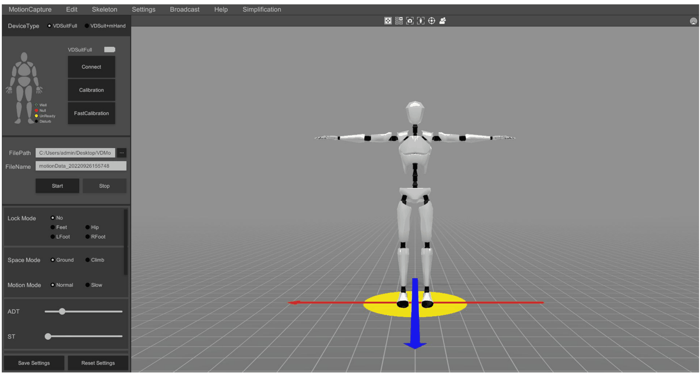
| 단추 | 기능 |
|---|---|
| 창 1개 · 창 4개 | 기본은 창 1개입니다. 창 4개로 바꿀 수 있으며, 두 방식 모두 창을 따로 옮기고 돌릴 수 있습니다. |
| 카메라 초기화 | 카메라를 모델에 대한 기본 상대 위치로 되돌립니다. 캐릭터가 멀리 걸어가 원점만 보일 때 씁니다. |
| 모델 초기화 | 모델을 원래 위치로 되돌립니다. 기록 중 멀리 간 모델을 원점으로 바로 데려올 때 씁니다. |
| 카메라 추적 | 켜면 카메라가 늘 모델을 따라갑니다. 단추가 회색이면 꺼짐, 녹색이면 켜짐입니다. |
| 모델 전환 | 다른 내장 모델(로봇, 골격 인형)로 바꿉니다. 모델 가져오기는 지원하지 않습니다. |
장치 연결 문서
- Device Type(장치 종류)에서 27노드 전신 슈트인 「VDSuitFull」을 고르십시오.
- 「Connect」를 눌러 장치를 연결하십시오. 왼쪽 인체 그림의 색으로 노드별 연결 상태를 확인할 수 있습니다: 녹색(Well) 정상, 빨간색(Null) 신호 없음, 노란색(UnReady) 준비 중, 검은색(Disturb) 자기 간섭.
- 캘리브레이션은 6장을 보십시오.
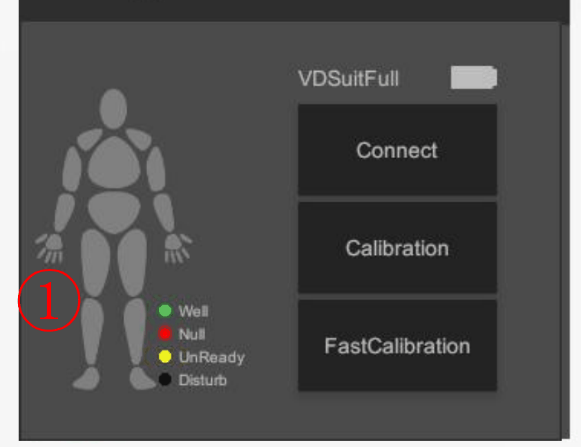
데이터 기록 문서
- FilePath(저장 경로)와 FileName(파일 이름)을 정한 뒤 「Start」를 누르면 기록이 시작됩니다.
- 「Stop」을 누르면 기록이 끝나고 데이터가 지정한 경로에 파일로 저장됩니다.
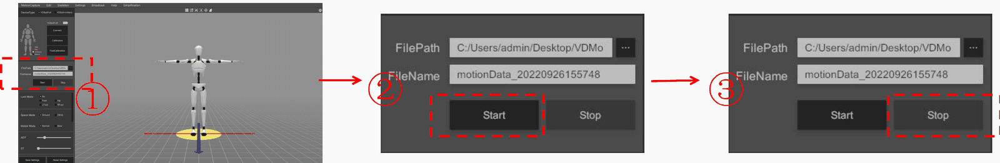
모션 캡처 매개변수 문서
| 항목 | 기능 | 범위 · 기본값 |
|---|---|---|
| Lock Mode (잠금) | 특정 부위의 자세를 고정해 더 안정적인 결과를 얻습니다. No Lock(일반 변위) · Feet Lock(두 발) · Hip Lock(골반) · L Foot Lock · R Foot Lock | — |
| Space Mode (공간) | Flat Ground(평지, 화면에는 Ground)는 계단 같은 수직 이동을 인식하지 못하고, Climb(등반)은 인식합니다. | 기본 Flat Ground |
| Motion Mode (동작) | 발 동작 속도에 맞춰 고릅니다. Normal은 느린 발 동작에 둔하고, Slow는 발을 천천히 끄는 동작용입니다. | 기본 Normal |
| Altitude Difference Tolerance (고도차 허용) | 하체의 앞 기울기를 조정해 걸을 때 발걸음 누락을 줄입니다. | 0 ~ 10, 기본 4 |
| Speed Tolerance (속도 허용) | 점프 뒤 수평 속도를 제한해 수평으로 밀리는 현상을 줄입니다. 1이면 제한을 켭니다. | 기본 0 |
| Arm-body Angle (팔-몸 각도) | 박수처럼 두 손이 만나는 동작에서 두 손의 상대 위치를 수평으로 미세 조정합니다. | −0.5 ~ 0.5, 기본 0 |
| Fingers Clenched and Unclenched | 손가락을 옆으로 벌리는 동작을 켜고 끕니다. | On · Off |
| Initial Arm-body Angle (초기 팔-몸 각도) | 손을 내려 허벅지에 붙였을 때 모델의 손과 몸이 겹쳐 보이면 조정합니다. | −1.5 ~ 1.5, 기본 0 |
| Skeleton Match (스켈레톤 매칭) | 모델의 기본 스켈레톤이 표준과 달라 자세가 이상할 때 표준 스켈레톤에 매핑합니다. No Match · Match Legs · Match Hands · Match Whole Body | — |
| Performance Rate | 값이 클수록 모델의 자세가 좋아집니다. | 1 ~ 3, 기본 3 |
| Model Orientation (모델 방향) | 모델의 방향 오프셋입니다. | −1 ~ 1 (−180° ~ 180°), 기본 0 |
| L · R Hand OK | 왼손 · 오른손 OK 제스처(검지와 엄지가 닿는 정도). 값이 클수록 더 닿습니다. | −1 ~ 1, 기본 0 |
| Jump Height (점프 높이) | 값이 클수록 모델의 점프가 높아집니다. | −1 ~ 1, 기본 0 |
| Save · Reset | Save를 누르면 다음 실행에도 값이 유지되고, Reset을 누르면 모두 기본값으로 돌아갑니다. | — |
데이터 편집과 재생 문서
- 모션 데이터 목록에서 「+」를 눌러 저장된 모션 파일을 불러올 수 있습니다. 목록에서 데이터를 두 번 누르면 장면에 불러와지고, 오른쪽 재생 컨트롤로 재생합니다.
- 데이터 편집 영역에서는 데이터 복구(접촉점 보정, 점프 높이 · 이동 최적화, 발걸음 누락 보정, 안정화, 스무딩), 다른 모델의 스켈레톤에 맞추는 리타게팅(Re-orientation), 프레임 재구성(목표 프레임 속도로 다시 만들기), 프레임 자르기, 접촉점 설정(오른손 · 왼손 · 오른발 · 왼발 · 허리)을 쓸 수 있습니다.
- 노드별 위치 · 자세를 고친 뒤에는 「일괄 실행」을 눌러야 다음 작업을 할 수 있습니다. FK 구동은 잠금 효과가 없고, FIK 구동은 잠금 효과가 있어 실제 결과에 영향을 줍니다.
- 편집한 데이터는 「Save As」로 .md 형식으로 저장하거나, 「Export」로 파일 형식과 회전 순서를 정해 내보내십시오.
스켈레톤(신체 치수) 문서
- Skeleton 메뉴에서 새 스켈레톤을 추가하고 키를 입력하면 신체 비율이 자동으로 만들어집니다.
- 목록에서 스켈레톤을 두 번 누르면 Hip(골반), Thigh(허벅지), Calf(종아리), Sole(발바닥), Shoulder(어깨), UpperArm(위팔), LowerArm(아래팔), Palm(손바닥) 같은 항목의 길이(cm)를 직접 고칠 수 있습니다.
- Skeleton 메뉴의 적용 목록에서 모션 캡처에 쓸 스켈레톤을 골라 적용하십시오.
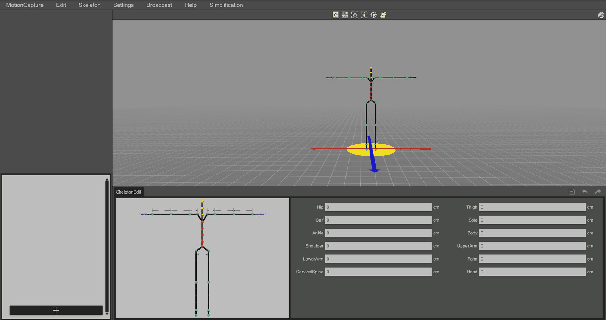
하드웨어 · 시스템 설정 문서
- Settings 메뉴의 Hardware Setting(하드웨어 설정)에서 Target Device(대상 장치), Frequency(60 · 72 · 80 · 96 Hz), Connection Mode(유선 · 무선)를 정합니다. 연결 방식을 바꾼 뒤에는 소프트웨어에서 다시 연결해야 합니다.
- 같은 창의 「성능 복구(Performance Recovery)」로 화면 안내와 튜토리얼에 따라 자성 캘리브레이션과 딥 마그네틱 캘리브레이션을 합니다.
- System Setting(시스템 설정)에서는 3D 화면의 표시 품질을 정합니다. 화질이 높을수록 더 좋은 그래픽 카드가 필요하므로, 화면이 멈추면 화질을 낮추십시오.
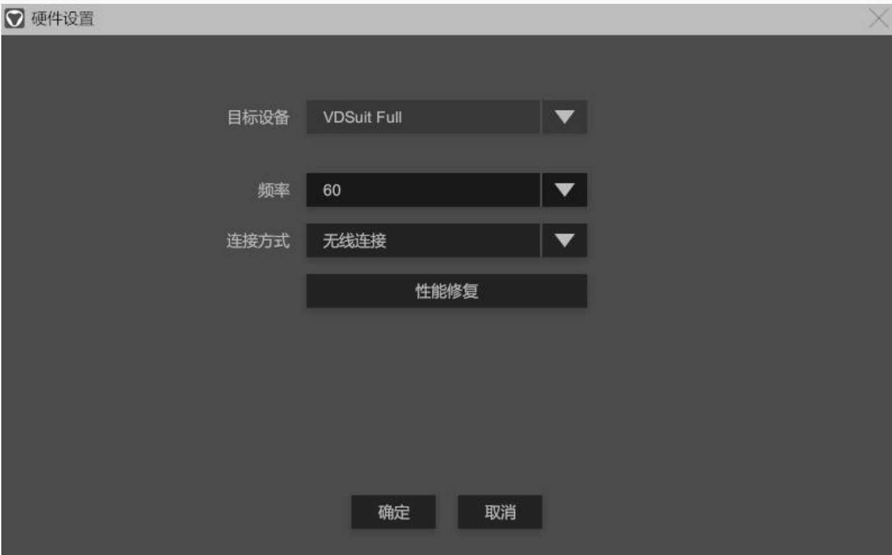
데이터 브로드캐스트 문서
Broadcast 메뉴(Data Share 창)에서 IP 주소와 포트를 정하면 실시간 모션 데이터를 UDP로 다른 프로그램(게임 엔진, 로봇 원격조작 소프트웨어 등)에 보낼 수 있습니다. 로봇 원격조작 PC로 보내는 방법은 8장을 보십시오.
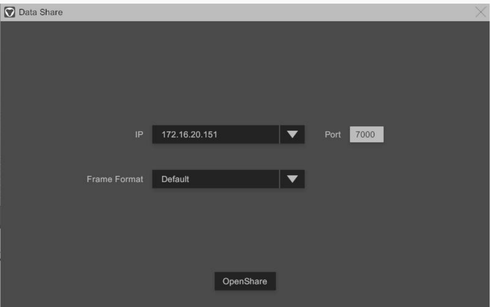
로봇 원격조작에 연결
WeGo는 VDMocap Studio의 데이터 브로드캐스트로 슈트 데이터를 Ubuntu PC의 WeGo Humanoid Studio에 보내 휴머노이드 로봇을 원격조작합니다. 원격조작 소프트웨어의 설치와 조작은 WeGo Humanoid Studio 사용 가이드를 보십시오. 이 장은 슈트 쪽에서 알아 둘 것만 모았습니다. 실측
연결 구성 실측
| 구간 | 연결 | 소프트웨어 · 기본값 |
|---|---|---|
| 슈트 → 모션 캡처 PC (Windows) | 2.4 GHz 무선 수신기 또는 3 m USB 유선 | VDMocap Studio |
| 모션 캡처 PC → 원격조작 PC (Ubuntu) | 같은 네트워크, UDP (VDMocap Studio 데이터 브로드캐스트) | 포트 7000 |
| 원격조작 PC → 로봇 | 이더넷, 로봇 네트워크 192.168.123.x (별도 네트워크 포트) | WeGo Humanoid Studio |
설정 순서 실측
- 네트워크를 연결하십시오.모션 캡처 PC와 원격조작 PC를 같은 네트워크에 연결하십시오. 원격조작 PC는 로봇 네트워크와 다른 네트워크 포트로 이 네트워크에 연결하며, 두 네트워크를 동시에 연결해 둘 수 있습니다.
- 슈트를 준비하십시오.VDMocap Studio에서 슈트를 연결하고 캘리브레이션하십시오(5 · 6장).
- 브로드캐스트를 켜십시오.Broadcast 메뉴의 Data Share 창에서 IP에 모션 캡처 PC 자신의 주소(원격조작 PC와 같은 네트워크의 주소)를 고르고, 포트를 확인한 뒤 「OpenShare」를 누르십시오. 이 주소가 Humanoid Studio가 슈트 데이터를 받는 주소입니다. 포트는 모션 캡처 소프트웨어에서 따로 바꾸지 않았다면 Humanoid Studio 기본값 7000을 그대로 쓰십시오.
- Humanoid Studio에 입력하십시오.Humanoid Studio 헤더의 슈트 IP에 모션 캡처 PC의 그 주소를 넣고(기본값
192.168.0.68), 모드는 「슈트 (일체형)」을 고르십시오. 자세한 내용은 WeGo Humanoid Studio 사용 가이드 5장 「로봇과 모션캡처 장비 연결」을 보십시오.
원격조작 PC의 수신 라이브러리 SDK
원격조작 PC는 제조사의 VDMocap SDK(DataRead)로 데이터를 받습니다. 이 SDK는 모션 캡처 PC의 IP와 포트로 연결을 요청한 뒤 UDP로 프레임을 받으며, Windows용 DLL과 Linux용 라이브러리가 있습니다. 제조사는 Linux 라이브러리가 Ubuntu 22.04 x64용이며 Ubuntu 20.04나 arm64에서는 다른 파일로 바꿔야 한다고 적고 있고, WeGo도 arm64 PC에서는 이 라이브러리를 쓸 수 없음을 확인했습니다. SDK 파일은 제조사가 제공하며, 배포 조건은 WeGo 기술 지원에 문의하십시오.
운용 중 확인할 점 실측
- 영점 흐름: 세션을 시작할 때 캘리브레이션해도 세션 도중 IMU 영점이 흐를 수 있습니다. WeGo 기록의 한 세션에서는 왼쪽 엉덩이 yaw 값이 7분 동안 0.08 rad에서 0.95 rad까지 한 방향으로 늘었습니다(정상 세션은 분당 −0.019 rad). 원격조작 소프트웨어는 흐른 자세를 그대로 따르므로, 자세가 서서히 어긋나면 원격조작을 멈추고 다시 캘리브레이션하십시오.
- 무선 구간의 끊김: 원격조작 PC가 받은 슈트 데이터가 2 ~ 3초 동안 약 190 ms씩 비었다가 몰려 들어오는 현상을 기록했으며, 원인은 원격조작 PC보다 앞단(슈트 쪽 무선 구간)이었습니다. WeGo는 전용 5 GHz 무선 공유기(AP)를 권장합니다.
문제 해결
제조사 문서의 자주 묻는 질문과, WeGo가 원격조작 PC와 기술 지원에서 확인한 점검 순서입니다.
자주 묻는 질문 문서
| 증상 | 원인 | 해결 |
|---|---|---|
| 실시간 모델링 소프트웨어가 멈추거나 반응하지 않음 | ① 수신기가 컨트롤러에서 너무 멂 ② 신호가 가려지거나 간섭받음 ③ 소프트웨어와 드라이버 버전이 맞지 않음 ④ PC 하드웨어가 소프트웨어를 지원하지 않음 | ① 수신기와 컨트롤러를 되도록 가까이 두고 20 m 안에 신호를 가리는 사람 · 벽 · 물체가 없게 하십시오 ② 갱신 속도를 96 Hz로 바꾸십시오 ③ PC에 맞는 드라이버를 다시 설치하십시오 ④ 다른 PC로 시도하십시오 |
| 수신기는 장치와 연결되지만 소프트웨어와 연결되지 않음 | 드라이버가 손상되었거나 PC가 장치를 인식하지 못함 | 수신기를 다른 USB 포트에 꽂으십시오. 그래도 안 되면 장치 관리자에서 COM 포트 드라이버 상태를 확인하고, 이상하면 드라이버를 업데이트하거나 다시 설치하십시오. |
| 수신기가 컨트롤러와 자동으로 페어링되지 않음 | 배터리 부족. 수신기에 연결하기 전에 장치를 켜면 페어링이 실패함 | 배터리를 교체하거나 충전하십시오. 배터리가 충분한 상태에서 장치를 다시 켜면 컨트롤러와 장치가 자동으로 연결됩니다. |
| 스쿼트할 때 다리가 평행하지 않음 | 허벅지 부분을 잘못 착용함. 스쿼트하면 허벅지 근육이 부풀어 노드 위치가 바뀜 | 허벅지 부분을 다시 착용하십시오. 노드를 무릎 가까이에 되도록 평행하게 두고, 근육이 많은 곳은 피하십시오. |
| 모델이 박수를 치지 못하고 닿는 위치가 맞지 않음 | 모델의 크기가 사용자와 다름 | 모델 크기를 사용자에게 완전히 맞추십시오(7장 「스켈레톤」). |
| 팔을 뻗었을 때 좌우 팔이 평행하지 않음 | 어깨 부분이 헐겁거나 위치가 맞지 않거나, A-Pose 캘리브레이션 때 근처에 자기 간섭이 있었음 | 어깨 부분의 조임과 위치를 고쳐 어깨 근육 뒤의 평평한 곳에 두고, A-Pose 캘리브레이션을 다시 하십시오. |
| 며칠 사용한 뒤 팔다리 동작이 서로 맞지 않음 | 복잡한 자기장 환경에서 생기는 정상적인 오차 | A-Pose 캘리브레이션을 다시 하십시오. |
| 캘리브레이션 직후 팔다리 동작이 서로 맞지 않음 | 좌우 부분을 바꿔 착용함, 심한 자기 간섭, 캘리브레이션 뒤 슈트를 고쳐 입음, 또는 센서 자화 | 슈트를 고쳐 입었는지, 자기 간섭이 있는지 확인하십시오. 여러 번 캘리브레이션해도 그러면 딥 마그네틱 캘리브레이션을 고려하십시오. |
| 팔을 곧게 폈는데 곧게 보이지 않음 | A-Pose 캘리브레이션 때 팔을 곧게 펴지 않았거나, 자기 간섭(자석, 철 제품, 땅속의 큰 철근)이 있었거나, 센서 자화 | 외부 간섭을 확인하고 팔을 곧게 편 채 A-Pose 캘리브레이션을 다시 하십시오. 여러 번 해도 그러면 딥 마그네틱 캘리브레이션을 고려하십시오. |
| 걸을 때 발걸음이 빠짐 | 모델링 소프트웨어의 발바닥이 너무 김, A-Pose 캘리브레이션 때 앞으로 기울임, 다리 노드 위치가 바뀜 | 앞으로 기울이지 말고 A-Pose 캘리브레이션을 다시 하십시오. 여러 번 해도 그러면 모델 크기를 조정하십시오. |
사양표는 데이터 전송을 「2.4 GHz 무선」으로 적지만, FAQ는 같은 연결을 「블루투스 페어링」이라고 부릅니다. 이 책은 「페어링」으로만 적었습니다.
원격조작 PC에서 슈트 데이터가 보이지 않을 때 실측
원격조작 화면의 로봇이 작업자를 따라오지 않으면 슈트 데이터가 원격조작 PC에 도착하지 않는 것입니다. 아래를 차례로 확인하십시오.
- 브로드캐스트VDMocap Studio가 실행 중이고, 슈트가 연결 · 캘리브레이션되어 있으며, 데이터 브로드캐스트가 켜져 있습니까?
- 슈트 IPHumanoid Studio 헤더의 슈트 IP가 VDMocap Studio가 데이터를 보내는 주소와 같습니까?
- 모드모드가 「슈트 (일체형)」이고 포트가 7000입니까?
- 네트워크원격조작 PC가 모션 캡처 PC와 같은 네트워크에 있습니까? 로봇 네트워크와는 다른 네트워크 포트로 연결합니다.
Humanoid Studio의 팔(ARM) 로그는 프레임이 도착할 때 상태 메시지를 찍습니다. 로그가 조용하면 문제는 원격조작 소프트웨어보다 앞단(슈트 · VDMocap Studio · 네트워크)에 있습니다.
기술 지원에서 확인한 것 실측
| 증상 | 조치 |
|---|---|
| 가상 머신의 Windows에서 슈트가 인식되지 않음 | 실제 Windows PC에 설치하십시오(3장). |
| 2.4 GHz 무선에서 장치 인식이 불안정함 | 3 m USB 유선 연결로 바꾸어 확인하십시오(5장). |
| 장치는 인식되는데 캘리브레이션 진행률이 오르지 않음 | 슈트의 장갑을 끼고 VDSuitFull로 다시 연결한 뒤, Performance Recovery의 Wearable Calibration → 일반 캘리브레이션, 그래도 안 되면 Box Recovery 순서로 하십시오(6장). |
빠른 참조
자주 찾는 값과 절차, 자료 폴더의 개발자용 자료를 모았습니다.
A. 연결과 기본값
| 항목 | 값 |
|---|---|
| 무선 연결 | 허브 케이블 → Signal out, 수신기 → PC USB (수신기를 먼저 꽂고 컨트롤러를 켬) |
| 유선 연결 | 허브 케이블 → Signal out, 3 m USB 케이블 → Charge in과 PC USB |
| 작동 표시등 | 유선 모드 빨간색, 무선 모드 파란색 (계속 켜짐) |
| 수신기 드라이버 | XR21 2.7.0.0, 장치 관리자 「XR21V1410 USB UART (COMxx)」 |
| 데이터 프레임 속도 | 60 · 72 · 80 · 96 Hz (Settings → Hardware Setting) |
| 브로드캐스트 → 원격조작 PC | UDP 포트 7000, Data Share IP = 모션 캡처 PC 자신의 주소 = Humanoid Studio 슈트 IP (기본값 192.168.0.68) |
B. 캘리브레이션 자세
| 자세 | 요점 |
|---|---|
| A_Pose | 손을 내려 손바닥을 허벅지 안쪽에 붙임 · 엄지와 검지 45° · 다리를 펴고 발끝 정면, 어깨너비 · 숙이거나 기울이지 않음 · 끝까지 움직이지 않음 |
| P_Pose | A_Pose 다음에 · 두 손을 가슴 앞 수평으로, 어깨너비로 평행하게 · 손바닥 아래 · 엄지와 검지 45°, 네 손가락 붙임 · 손바닥 · 아래팔 · 위팔 한 직선 |
| FastCalibration | VDSuitFull은 A_Pose 차렷. 자세를 먼저 취한 뒤 단추를 누름 |
| 다시 할 때 | 노드를 옮기거나 다시 입었을 때, 며칠 사용 뒤 동작이 어긋날 때, 세션 중 자세가 서서히 어긋날 때 |
C. 개발자용 플러그인과 부가 자료
제조사 자료 폴더에는 슈트로 캡처한 모션 데이터를 다른 3D 소프트웨어나 게임 엔진과 연동할 때 쓰는 자료가 들어 있습니다. 일반적인 설치와 사용에는 필요하지 않습니다. 각 프로그램은 그 프로그램의 라이선스에 따라 따로 구입하거나 사용해야 합니다.
| 파일 | 내용 |
|---|---|
| Blender (2).zip | Blender 연동 플러그인 |
| iClone7.rar · iClone8.rar | Reallusion iClone 7 · 8 연동 플러그인 |
| Maya.zip | Autodesk Maya 연동 플러그인 |
| UE-4.24-Plugins ~ UE-5.6-Plugins | Unreal Engine 버전별(4.24 ~ 5.6) 연동 플러그인 |
| Unity-Plugin.zip | Unity 연동 플러그인 |
| VDMocapOSC-VRChat Plugin.zip | VRChat용 OSC 연동 플러그인 |
| Model Specification.rar | 사용자 모델 제작 규격 |
| Model Binding Specification (PDF) | 모델 스켈레톤 바인딩(리깅) 규격 |
| calibration postures.rar | 캘리브레이션 자세 참고 자료 |
| Magnetic Calibration Tutorial.rar | 자성 캘리브레이션(딥 마그네틱 캘리브레이션) 튜토리얼 |
| boxing mag calibration process.rar | 격한 동작(복싱 등)에서의 자성 캘리브레이션 사례 |